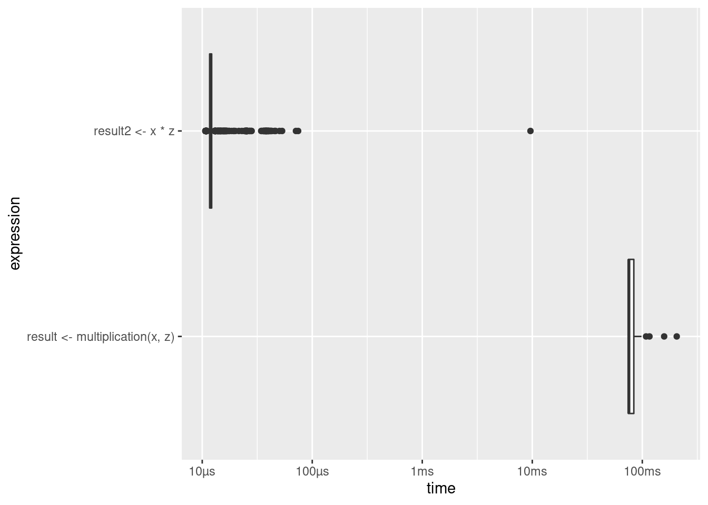

Chapter 2 Computing Resources
2.1 Components of a standard computing environment
Figure 2.1 illustrates the key components of a standard computing environment to process digital data. In our case, these components serve the purpose of computing a statistic, given a large data set as input.

Figure 2.1: Basic components of a standard computing environment.
The component actually processing data is the Central Processing Unit (CPU). When using R to process data, R commands are translated into complex combinations of a small set of basic operations which the CPU then executes.
In order to work with data (e.g., in R), it first has to be loaded into the memory of our computer. More specifically, into the Random Access Memory (RAM). Typically, data is only loaded in the RAM as long as we work with it.
Mass Storage refers to the type of computer memory we use to store data in the long run. This is what we call the hard drive or hard disk. In these days, the relevant hard disk is actually often not the one physically built into our computer but a hard disk ‘in the cloud’ (built into a server to which we connect over the Internet).
Very simply put, the difference between ‘data analytics’ and ‘Big Data analytics’ is that in the latter case, the standard usage of one or several of these components fails or works very inefficiently because the amount of data overwhelms its normal capacity.
From this hardware-perspective, there are two basic strategies to cope with the situation that one of these components is overwhelmed by the amount of data:
- Scale up (‘horizontal scaling’): Extend the physical capacity of the affected component by building a system with large RAM shared between applications. This sounds like a trivial solution (‘if RAM is too small, buy more RAM…’), but in practice it can be very expensive.
- Scale out (‘vertical scaling’): Distribute the workload over several computers (or separate components of a system).
From a software-perspective, there are many (context-specific) strategies that can help us to use the resources available more efficiently in order to process large amounts of data. In the context of computing statistics based on big data, this can involve:
- Implementing the computation of a given statistical procedure in a more efficient way (make better use of a given programming language or choose another programming language).
- Choosing/implementing a more efficient statistical procedure/algorithm (see, e.g., the Uluru algorithm).
- At a lower level, improving how the system allocates resources.
2.2 Units of information/data storage
The smallest unit of information in computing/digital data is called a bit (from binary digit; abbrev. ‘b’) and can take one of two (symbolic) values, either a 0 or a 1 (“off” or “on”). Consider, for example, the decimal number 139. Written in the binary system, 139 corresponds to the binary number 10001011. In order to store this number on a hard disk, we require a capacity of 8 bits, or one byte (1 byte = 8 bits; abbrev. ‘B’). Historically, one byte encoded a single character of text (i.e., in the ASCII character encoding system). 4 bytes (or 32 bits) are called a word. When thinking of a given data set in its raw/binary representation, we can simply think of it as a row of 0s and 1s, as illustrated in the following figure.

Figure 2.2: Writing data stored in RAM to a Mass Storage device (hard drive). Figure by Murrell (2009) (licensed under CC BY-NC-SA 3.0 NZ).
Bigger units for storage capacity usually build on bytes:
- \(1 \text{ kilobyte (KB)} = 1000^{1} \approx 2^{10} \text{ bytes}\)
- \(1 \text{ megabyte (MB)} = 1000^{2} \approx 2^{20} \text{ bytes}\)
- \(1 \text{ gigabyte (GB)} = 1000^{3} \approx 2^{30} \text{ bytes}\)
- \(1 \text{ terabyte (TB)} = 1000^{4} \approx 2^{40} \text{ bytes}\)
- \(1 \text{ petabyte (PB)} = 1000^{5} \approx 2^{50} \text{ bytes}\)
- \(1 \text{ exabyte (EB)} = 1000^{6} \approx 2^{60} \text{ bytes}\)
- \(1 \text{ zettabyte (ZB)} = 1000^{7} \approx 2^{70} \text{ bytes}\)
\[1 ZB = 1000000000000000000000\text{ bytes} = 1 \text{ billion terabytes} = 1 \text{ trillion gigabytes}.\]
2.2.1 Example in R: Data types and information storage
Given the fact that computers only understand 0s and 1s, different approaches are taken to map these digital values to other symbols or images (text, decimal numbers, pictures, etc.) that we humans can more easily make sense of. Regarding text and numbers, these mappings involve character encodings (in which combinations of 0s and 1s represent a character in a specific alphabet) and data types.
Let’s illustrate the main concepts with the simple numerical example from above. When we see the decimal number 139 written somewhere, we know that it means ‘one-hundred-and-thirty-nine.’ The fact that our computer is able to print 139 on the screen means that our computer can somehow map a sequence of 0s and 1s to the symbols 1, 3, and 9. Depending on what we want to do with the data value 139 on our computer, there are different ways of how the computer can represent this value internally. Inter alia, we could load it into RAM as a string (‘text’/‘character’) or as an integer (‘natural number’) or double (numeric, floating point number). All of them can be printed on screen but only the latter two can be used for arithmetic computations. This concept can easily be illustrated in R.
We initiate a new variable with the value 139. By using this syntax, R by default initiates the variable as an object of type double. We then can use this variable in arithmetic operations.
my_number <- 139
# check the class
typeof(my_number)## [1] "double"# arithmetic
my_number*2## [1] 278When we change the data type to ‘character’ (string) such operations are not possible.
# change and check type/class
my_number_string <- as.character(my_number)
typeof(my_number_string)## [1] "character"# try to multiply
my_number_string*2## Error in my_number_string * 2: non-numeric argument to binary operatorIf we change the variable to type integer, we can still use math operators.
# change and check type/class
my_number_int <- as.integer(my_number)
typeof(my_number_int)## [1] "integer"# arithmetics
my_number_int*2## [1] 278Having all variables in the right type is relevant for data analytics with all kind of sample sizes. However, given the fact that different data types have to be represented differently internally, different types might take up more or less memory and therefore substantially affect the performance when dealing with massive amounts of data.
We can illustrate this point with object.size():
object.size("139")## 112 bytesobject.size(139)## 56 bytes2.3 Big Data econometrics
When thinking about how to approach a data analytics task based on large amounts of data, it is helpful to consider two key aspects concerning the computational burden involved. \((i)\) how is the statistic we have in mind computed. That is, what is the formal definition of the statistic (and how computationally demanding is it)? And \((ii)\), given a definition of the statistic, how does the program/software/language implement the computation thereof?
Regarding the former, we might realize that there is an alternative statistical procedure that would provide essentially the same output but that happens to be more efficient (here: computationally efficient in contrast to statistically efficient). The latter point is a question of how to efficiently implement the given statistical procedure in your computing environment (taking into consideration the computer’s available resources: CPU, RAM, etc.).
Below, we look at both of these two aspects by means of illustrative examples.
2.4 Example: Fast least squares regression
As an illustration of how an alternative statistical procedure can speed up our analysis, we look at one such procedure that has recently been developed to estimate linear models when the classical OLS estimator is too computationally intense for very large samples: The Uluru algorithm (Dhillon et al. 2013).
2.4.1 OLS as a point of reference
Recall the OLS estimator in matrix notation, given the linear model \(\mathbf{y}=\mathbf{X}\beta + \epsilon\):
\(\hat{\beta}_{OLS} = (\mathbf{X}^\intercal\mathbf{X})^{-1}\mathbf{X}^{\intercal}\mathbf{y}\).
In order to compute \(\hat{\beta}_{OLS}\), we have to compute \((\mathbf{X}^\intercal\mathbf{X})^{-1}\), which implies a computationally expensive matrix inversion.1 If our data set is large, \(\mathbf{X}\) is large and the inversion can take up a lot of computation time. Moreover, the inversion and matrix multiplication to get \(\hat{\beta}_{OLS}\) needs a lot of memory. In practice, it might well be that the estimation of a linear model via OLS with the standard approach in R (lm()) brings a computer to its knees, as there is not enough RAM available.
To further illustrate the point, we implement the OLS estimator in R.
beta_ols <-
function(X, y) {
# compute cross products and inverse
XXi <- solve(crossprod(X,X))
Xy <- crossprod(X, y)
return( XXi %*% Xy )
}Now, we will test our OLS estimator function with a few (pseudo) random numbers in a Monte Carlo study. First, we set the sample size parameters n (how many observations shall our pseudo sample have?) and p (how many variables shall describe these observations?) and initiate the data set X.
# set parameter values
n <- 10000000
p <- 4
# Generate sample based on Monte Carlo
# generate a design matrix (~ our 'dataset') with four variables and 10000 observations
X <- matrix(rnorm(n*p, mean = 10), ncol = p)
# add column for intercept
X <- cbind(rep(1, n), X)Now we define how the real linear model looks like that we have in mind and compute the output y of this model, given the input X.2
# MC model
y <- 2 + 1.5*X[,2] + 4*X[,3] - 3.5*X[,4] + 0.5*X[,5] + rnorm(n)Finally, we test our beta_ols function.
# apply the ols estimator
beta_ols(X, y)## [,1]
## [1,] 2.0023
## [2,] 1.4996
## [3,] 4.0003
## [4,] -3.4999
## [5,] 0.49982.4.2 The Uluru algorithm as an alternative to OLS
Following Dhillon et al. (2013), we implement a procedure to compute \(\hat{\beta}_{Uluru}\):
\[\hat{\beta}_{Uluru}=\hat{\beta}_{FS} + \hat{\beta}_{correct}\], where \[\hat{\beta}_{FS} = (\mathbf{X}_{subs}^\intercal\mathbf{X}_{subs})^{-1}\mathbf{X}_{subs}^{\intercal}\mathbf{y}_{subs}\], and \[\hat{\beta}_{correct}= \frac{n_{subs}}{n_{rem}} \cdot (\mathbf{X}_{subs}^\intercal\mathbf{X}_{subs})^{-1} \mathbf{X}_{rem}^{\intercal}\mathbf{R}_{rem}\], and \[\mathbf{R}_{rem} = \mathbf{Y}_{rem} - \mathbf{X}_{rem} \cdot \hat{\beta}_{FS}\].
The key idea behind this is that the computational bottleneck of the OLS estimator, the cross product and matrix inversion,\((\mathbf{X}^\intercal\mathbf{X})^{-1}\), is only computed on a sub-sample (\(X_{subs}\), etc.), not the entire data set. However, the remainder of the data set is also taken into consideration (in order to correct a bias arising from the sub-sampling). Again, we implement the estimator in R to further illustrate this point.
beta_uluru <-
function(X_subs, y_subs, X_rem, y_rem) {
# compute beta_fs (this is simply OLS applied to the subsample)
XXi_subs <- solve(crossprod(X_subs, X_subs))
Xy_subs <- crossprod(X_subs, y_subs)
b_fs <- XXi_subs %*% Xy_subs
# compute \mathbf{R}_{rem}
R_rem <- y_rem - X_rem %*% b_fs
# compute \hat{\beta}_{correct}
b_correct <- (nrow(X_subs)/(nrow(X_rem))) * XXi_subs %*% crossprod(X_rem, R_rem)
# beta uluru
return(b_fs + b_correct)
}Test it with the same input as above:
# set size of subsample
n_subs <- 1000
# select subsample and remainder
n_obs <- nrow(X)
X_subs <- X[1L:n_subs,]
y_subs <- y[1L:n_subs]
X_rem <- X[(n_subs+1L):n_obs,]
y_rem <- y[(n_subs+1L):n_obs]
# apply the uluru estimator
beta_uluru(X_subs, y_subs, X_rem, y_rem)## [,1]
## [1,] 1.9396
## [2,] 1.5001
## [3,] 4.0030
## [4,] -3.4973
## [5,] 0.5001This looks quite good already. Let’s have a closer look with a little Monte Carlo study. The aim of the simulation study is to visualize the difference between the classical OLS approach and the Uluru algorithm with regard to bias and time complexity if we increase the sub-sample size in Uluru. For simplicity, we only look at the first estimated coefficient \(\beta_{1}\).
# define subsamples
n_subs_sizes <- seq(from = 1000, to = 500000, by=10000)
n_runs <- length(n_subs_sizes)
# compute uluru result, stop time
mc_results <- rep(NA, n_runs)
mc_times <- rep(NA, n_runs)
for (i in 1:n_runs) {
# set size of subsample
n_subs <- n_subs_sizes[i]
# select subsample and remainder
n_obs <- nrow(X)
X_subs <- X[1L:n_subs,]
y_subs <- y[1L:n_subs]
X_rem <- X[(n_subs+1L):n_obs,]
y_rem <- y[(n_subs+1L):n_obs]
mc_results[i] <- beta_uluru(X_subs, y_subs, X_rem, y_rem)[2] # the first element is the intercept
mc_times[i] <- system.time(beta_uluru(X_subs, y_subs, X_rem, y_rem))[3]
}
# compute ols results and ols time
ols_time <- system.time(beta_ols(X, y))
ols_res <- beta_ols(X, y)[2]Let’s visualize the comparison with OLS.
# load packages
library(ggplot2)
# prepare data to plot
plotdata <- data.frame(beta1 = mc_results,
time_elapsed = mc_times,
subs_size = n_subs_sizes)First, let’s look at the time used estimate the linear model.
ggplot(plotdata, aes(x = subs_size, y = time_elapsed)) +
geom_point(color="darkgreen") +
geom_hline(yintercept = ols_time[3],
color = "red",
size = 1) +
theme_minimal() +
ylab("Time elapsed") +
xlab("Subsample size")
The horizontal red line indicates the computation time for estimation via OLS, the green points indicate the computation time for the estimation via the Ulruru algorithm. Note that even for large sub-samples, the computation time is substantially lower than for OLS.
Finally, let’s have a look at how close the results are to OLS.
ggplot(plotdata, aes(x = subs_size, y = beta1)) +
geom_hline(yintercept = ols_res,
color = "red",
size = 1) +
geom_hline(yintercept = 1.5,
color = "green",
size = 1) +
geom_point(color="darkgreen") +
theme_minimal() +
ylab("Estimated coefficient") +
xlab("Subsample size")
The horizontal red line indicates the size of the estimated coefficient, when using OLS. The horizontal green line indicates the size of the actual coefficient. The green points indicate the size of the same coefficient estimated by the Uluru algorithm for different sub-sample sizes. Note that even relatively small sub-samples already deliver estimates very close to the OLS estimates.
The computational complexity of this is larger than \(O(n^{2})\). That is, for an input of size \(n\), the time needed to compute (or the number of operations needed) is \(n^2\).↩︎
In reality we would not know this, of course. Acting as if we knew the real model is exactly the point of Monte Carlo studies. It allows us to analyze the properties of estimators by simulation.↩︎